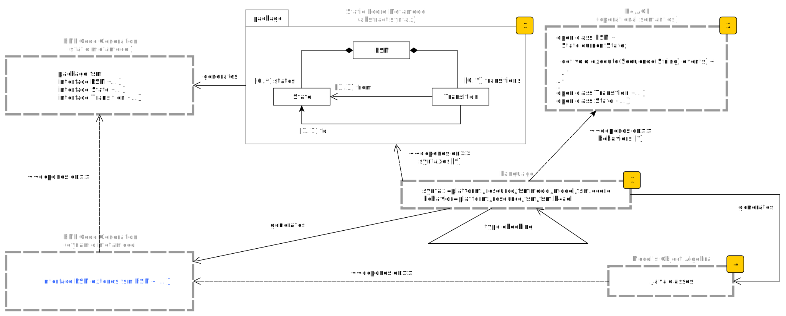
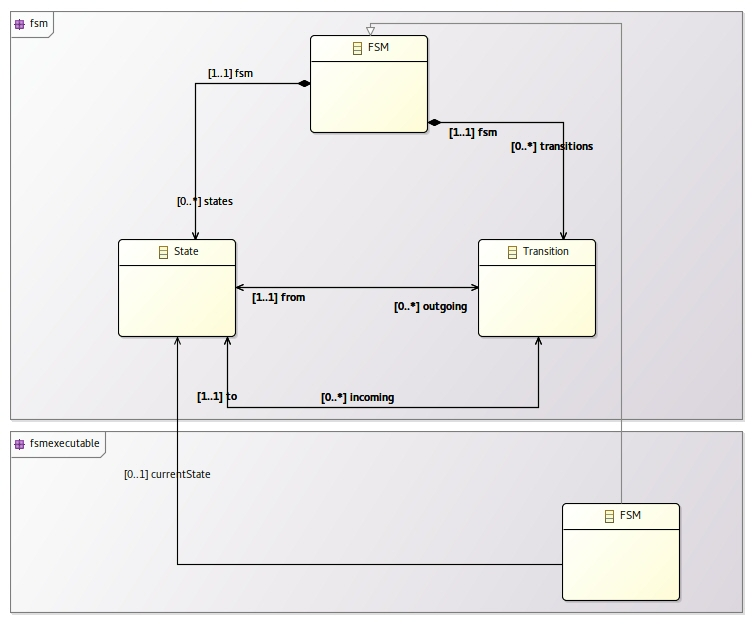
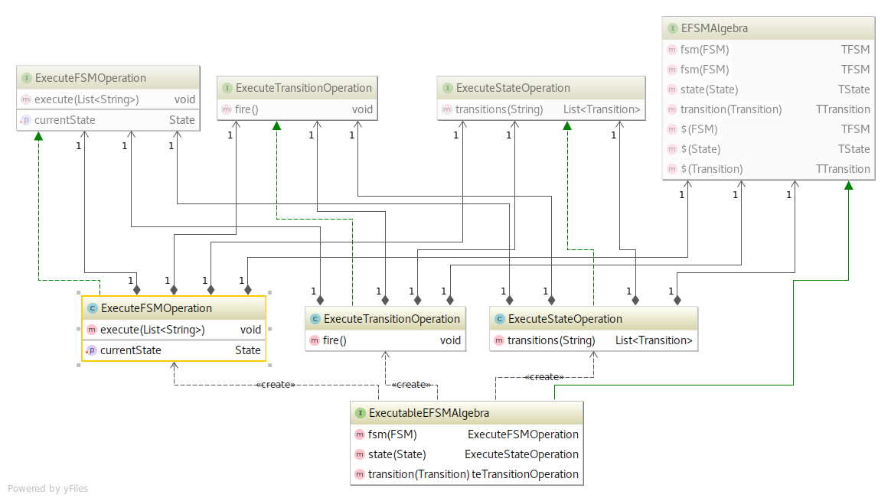

		<!-- Theme used for syntax highlighting of code -->
<!doctype html>
<html>
	<head>
		<meta charset="utf-8">
		<meta name="viewport" content="width=device-width, initial-scale=1.0, maximum-scale=1.0, user-scalable=no">

		<title>Kickoff ALE</title>

		<link rel="stylesheet" href="css/reveal.css">
		<link rel="stylesheet" href="css/theme/mleduc.css">

		<!-- Theme used for syntax highlighting of code -->
		<link rel="stylesheet" href="lib/css/agate.css">

		<!-- Printing and PDF exports -->
		<script>
			var link = document.createElement( 'link' );
			link.rel = 'stylesheet';
			link.type = 'text/css';
			link.href = window.location.search.match( /print-pdf/gi ) ? 'css/print/pdf.css' : 'css/print/paper.css';
			document.getElementsByTagName( 'head' )[0].appendChild( link );
		</script>
	</head>
	<body>
		<div class="reveal">
			<div class="slides">
				<section data-markdown>
					<script type="text/template">
						# Object-Oriented algebra for Language Engineering

						Kickoff ALE - Agile language engineering!

						### Manuel Leduc
					</script>
				</section>
				<section data-markdown>
					<script type="text/template">
						# Expression Problem

						## We want more and more DSL

						## => We need a way to reuse existing DSL
						- Syntactically
						- Semantically
					</script>
				</section>
				<section data-markdown>
						<script type="text/template">
						# Expression Problem

						## So that new types and operations can be added

						- Without modifying existing code
						- Without code duplication
						- With incremental compilation
						</script>
				</section>
				<section data-markdown>
					<script type="text/template">
						# DSL Extensibility

						- Legacy: Compatible with EMF
						- Reusable
						- Composable

						-> That's **Melange's inheritance**

						But also with incremental compilation!!!
					</script>
				</section>
				<section data-markdown>
					<script type="text/template">
						# Explicit AST

						1. Because it is easier to describe a model by defining an AST.
						1. It is easier to programmatically transform a program this way.

					</script>
				</section>
				<section data-markdown>
					<script type="text/template">
						# Keep it easy!

						- Like Kermeta, we want to keep the semantic easy to write
						- Introduction of **K4/AQL**, a DSL for operational semantic, integrated with EcoreTool
						- **K4/AQL** is compiled to *Object-Oriented Algebra*
						- Statically type safe
					</script>
				</section>
				<section data-markdown>
					<script type="text/template">
						# Known solution: Object Algebra

						## But
						- No AST
						- The program is built by composing functions of the algebra
						- No easy way to reason about the model


						```scala
						dynlet("x", lit(1),
							let("f", lambda("_", add(vari("x"), lit(1))),
								dynlet("x", lit(2),
									let("z", dynlet("x", lit(3),
													 apply(vari("f"), lit(1))),
										add(vari("z"), vari("x"))))))
						```

					</script>
				</section>
				<section data-markdown>
					<script type="text/template">
						<!-- TODO: Trouver des arguments plus solides-->
						# What we want

						## The best of both worlds because:

						- The *functional* world is better than *OO* for extending and composing operations
						- The *object oriented* world is better than *FP* for extending and composing syntaxes

					</script>
				</section>
				<section data-markdown>
					<script type="text/template">
						# Our solution: Object-Oriented Algebra

						- Explicit AST
						- A program is an instance of a model

						*BUT:* Really hard to write and maintains

						```java
						public interface GtfsmAlgebra<A, B, C, D, E, F, G, H, I>
							extends GfsmAlgebra<B, E, F, G, H, I>, TfsmAlgebra<A, C, D, F, G, H> {
								// ...
							}
						```

					</script>
				</section>
				<section data-markdown>
					<script type="text/template">
							# Big picture

							
					</script>
				</section>
				<section data-markdown>
						<script type="text/template">
							# EMF: ecore

							

						</script>
				</section>
				<section data-markdown>
						<script type="text/template">
							# K4/AQL

							```java
							open class FSM {
								State currentState;

								def void execute(Sequence(String) events) {
									for(event in event) {
										Sequence(fsm::Transition) transitions := self.currentState.transitions(event);
										transitions.get(0).fire();
									}
								}
							}

							open class State {
								def Sequence(fsm::Transition) transitions(String event) {
									 return := self.outgoing->select(transition | transition.event == event);
								}
							}

							open class Transition {
								def void fire() {
									self.fsm.currentState = self.to;
								}
							}
							```
						</script>
				</section>
				<section data-markdown>
					<script type="text/template">
							# Type Checking

							- Syntaxes and semantics can be weaved arbitrarily as long as it typecheck
							- Syntaxes can be extended by class inheritance
							- Semantics can be extended by class inheritance
					</script>
				</section>
				<section data-markdown>
					<script type="text/template">
							# Compilation artifacts
							Runtime syntax

							
					</script>
				</section>
				<section data-markdown>
					<script type="text/template">
							# Compilation artifacts

							Generated java code

							
					</script>
				</section>
				<section data-markdown>
					<script type="text/template">
							# Compilation artifacts: Abstract Algebra

							```java
							public interface EFSMAlgebra<TFSM, TState, TTransition> {
								TFSM fsm(syntax.fsm.FSM fsm);
								TFSM fsm(FSM fsm);
								TState state(State state);
								TTransition transition(Transition transition);

								default TFSM $(syntax.fsm.FSM fsm) {
									if (fsm instanceof syntax.efsm.FSM) {
										return fsm((syntax.efsm.FSM) fsm);
									}
									return fsm(fsm);
								}

								default TState $(State state) { return state(state); }

								default TTransition $(Transition transition) { return transition(transition); }
							}
							```
					</script>
				</section>
				<section data-markdown>
					<script type="text/template">
						# Compilation artifacts: Concrete Algebra

						

					</script>
				</section>
				<section data-markdown>
					<script type="text/template">
						# Compilation artifaces: Operation on Transition

						```java
						public class ExecuteTransitionOperation
							implements efsm.semantic.operation.ExecuteTransitionOperation {

						    private Transition transition;
						    private EFSMAlgebra<? extends efsm.semantic.operation.ExecuteFSMOperation,
									? extends ExecuteStateOperation,
									? extends efsm.semantic.operation.ExecuteTransitionOperation> algebra;

						    @Override
						    public void fire() {
						        // use $ deleguation when altering linked element (type group concistency).
						        final efsm.semantic.operation.ExecuteFSMOperation sem =
											algebra.$(transition.getFsm());
						        sem.setCurrentState(transition.getTo());
						    }
						}
						```

					</script>
				</section>
					<section data-markdown>
						<script type="text/template">
							# Compilation artifaces: Operation on FSM

							```java
public class ExecuteFSMOperation implements efsm.semantic.operation.ExecuteFSMOperation {
  private final FSM fsm;
  private final EFSMAlgebra<? extends efsm.semantic.operation.ExecuteFSMOperation,
		? extends ExecuteStateOperation,
		? extends ExecuteTransitionOperation> algebra;

  @Override
  public void execute(List<String> events) {
    for (String event : events) {
      final ExecuteStateOperation sem = algebra.$(fsm.getCurrentState());
      List<Transition> transitions = sem.transitions(event);

      if (transitions.isEmpty()) {
        System.out.println("DEADLOCK");
        break;
      } else if (transitions.size() > 1) {
        System.out.println("UNDETERMINISTIC");
        break;
      } else {
        algebra.$(transitions.get(0)).fire();
      }
    }
  }

  // ...
}
							```

						</script>
				</section>
				<section data-markdown>
					<script type="text/template">
						# Expected results

						- Easiest development of languages/less build time overall
						- Execution time comparable to EMF's Switch visitor

					</script>
				</section>
				<section data-markdown>
					<script type="text/template">
						# Conclusion

						- Incremental reuse and compilation in both directions
						- Performances close to EMF Switch Visitor
						- Static type safety at K4/AQL and Java level
					</script>
				</section>
				<section data-markdown>
					<script type="text/template">
						# Thank you!

					</script>
				</section>
			</div>
		</div>

		<script src="lib/js/head.min.js"></script>
		<script src="js/reveal.js"></script>

		<script>
			// More info https://github.com/hakimel/reveal.js#configuration
			Reveal.initialize({
				history: true,
				slideNumber: true,

				// More info https://github.com/hakimel/reveal.js#dependencies
				dependencies: [
					{ src: 'plugin/markdown/marked.js' },
					{ src: 'plugin/markdown/markdown.js' },
					{ src: 'plugin/notes/notes.js', async: true },
					{ src: 'plugin/highlight/highlight.js', async: true, callback: function() { hljs.initHighlightingOnLoad(); } }
				]
			});
		</script>
	</body>
</html>
